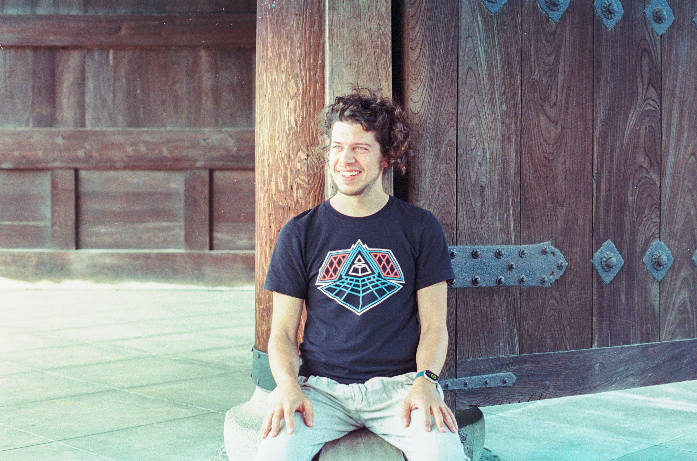

jurebb

Hi, my name is Jure. Software engineer based in Zürich, Switzerland, with interests in tech, urbanism, sustainability, music, and dancing.
Background
Currently working as a software engineer in Zürich. Computer science graduate from Croatia (2019), working in software since 2017, across large technology companies, startups, and research environments. Work has focused on backend systems, data pipelines, machine learning infrastructure, and large-scale data handling. Previous projects have touched on ML data pipelines, cybersecurity, recommendation systems, fairness in ML, and natural language processing.
Projects
Interests
Backend systems, data pipelines, and ML infrastructure. Experience in applied ML and data science.
Curious about how cities are designed and used. Partial to good transit, and living a car-free lifestyle. Built a pedestrian flow tracker as a first experiment. My compilation of train travels in 2025.
Jam sessions, bass pedals, bass covers, and lots of listening.
Beginner dacner. House, street dance, hip-hop.